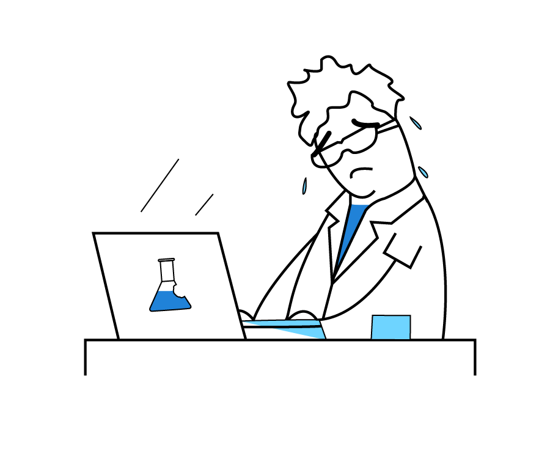

Who are we?
We're a deeply technical company specializing in scientific software development. Our engineers are among the strongest in Pharma/Biotech, with an expertise in Software Architecture, Databases, User Experience (UX) and Development Processes.
The way we operate is completely different from the rest of the pharma/biotech - we use modern approaches and end up with modern software. If you're looking for something fresh, check out our existing products or create software with us.
Geographically, we're mostly distributed across Europe:
The story of pain
-

One commonality that we noticed while working with pharmaceutical companies is frustration about software. While in theory scientists are people who dedicate their lives to pushing humanity forward, in practice they spend most of their time working around issues introduced by poorly written programs.
-
We think that this is a natural consequence of the complexity of the field - not many software experts agree to spend years studying science in addition to programming. Thus, we end up with software written by scientists out of frustration or by developers who don't really understand what they are doing.
-
Well, we are those experts - we are software professionals specializing in life sciences. Our mission is creating software that makes scientists productive. Software that respects your time and understands your problems. Software that removes obstacles and lets you concentrate on creative aspects of the job.